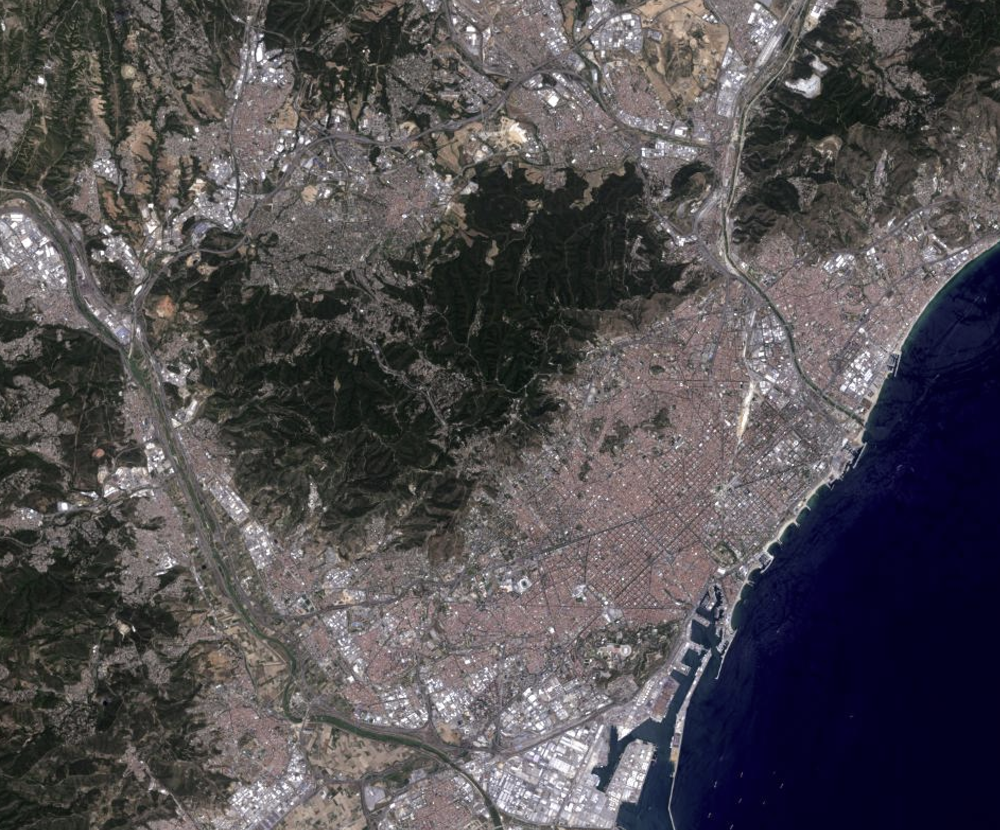
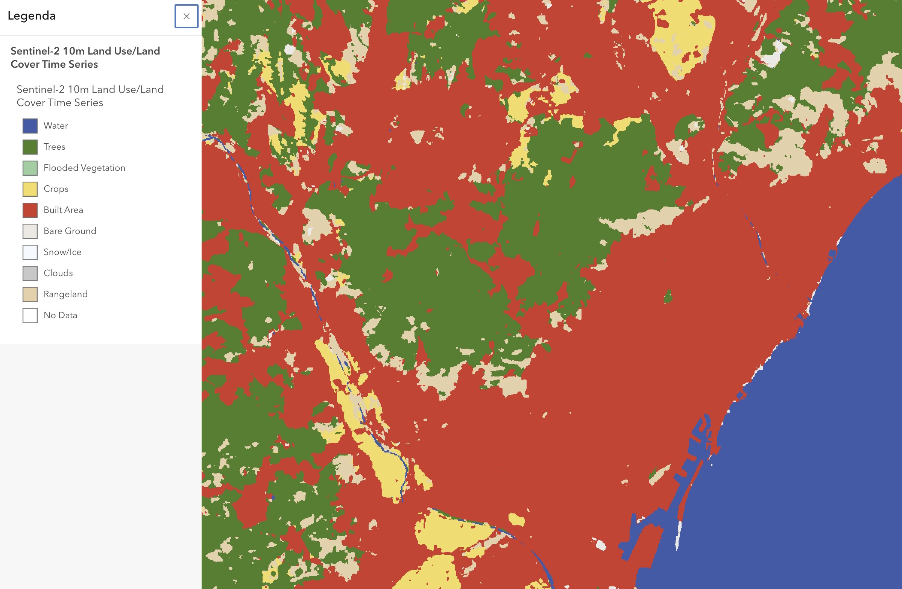
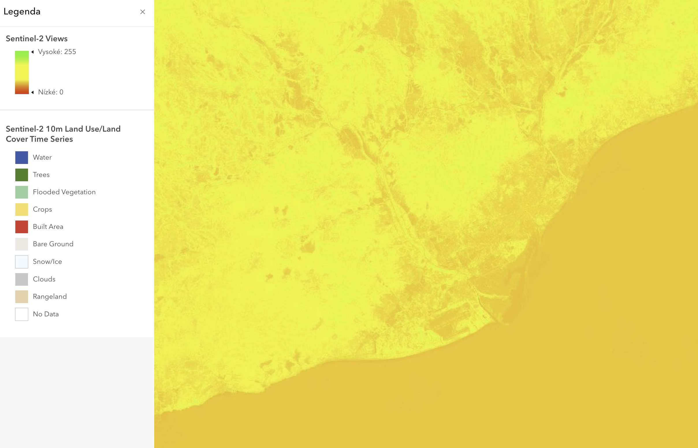

Barcelona's Land Cover & Satellite Imagery
Sentinel-2 Satellite Image View

Classified Land Use/Land Cover Map

This task focuses on automated land cover classification[cite: 3]. Automated land cover classification is extremely useful to geologists as it leverages machine learning to automatically catalog geography into predefined classes instead of requiring manual, hands-on digitization[cite: 3]. This computational efficiency is especially valuable for observing and processing rapid land cover changes over time from satellite data streams[cite: 3].
Methodology: Supervised vs. Unsupervised Classification
Land cover classification structures are generally divided into two main approaches[cite: 3]:
- Supervised Classification: The user manually establishes control by drawing training samples on a map to explicitly identify known land cover types[cite: 3]. The program evaluates these user-defined pixel profiles and groups all other statistically similar spectral signatures across the map into the same category (e.g., highlighting a known agricultural block to capture matching fields elsewhere)[cite: 3, 4].
- Unsupervised Classification: The system initiates the workflow independently by clustering raw pixels solely on statistical algorithm similarities[cite: 3, 4]. The GIS technician evaluates the output and labels those isolated clusters retrospectively based on actual land usage[cite: 3, 4].
Normalized Difference Vegetation Index (NDVI)
NDVI Classification Scheme

Vegetation Vitality Analysis[cite: 4]
The normalized analysis implements a highly practical green-yellow-red color continuum[cite: 4].
This standard schema provides intuitive data parsing since vibrant greens map natively to healthy, dense vegetation configurations[cite: 4]. This visually mirrors real-world conditions where strong plant chlorophyll responses align perfectly with standard green visualization benchmarks[cite: 4].